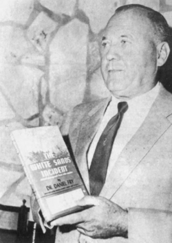

Daniel Fry
Contactee, 1908 to 1992

He worked at the White Sands Proving Ground in New Mexico, where he said that on July 4, 1949, a date he first gave as 1950, he rode in a remotely piloted craft and talked with its operator, whom he called Alan. 1
He described it in The White Sands Incident (1954) and founded a group called Understanding in 1955. He failed a polygraph test about his claims in 1954, and analysis suggests his UFO film and photos were hoaxes. 1
Open in the interactive Watcher
Related
- The White Sands Incident Wrote The White Sands Incident
Sources
- Daniel Fry Wikipedia